DesignReads
(design-reads)
Design Reads is an iOS Mobile resource aggregation application for UX Designers. DesignReads allows designers to discover, rate, and discuss popular industry resources. A group of fellow UX bootcamp graduates designed this application with me. My roles and the specific tasks I completed are listed below.
Design Roles
- Research
- UX Design
- Visual Design
- Project Manager
Duration
- 5 Months
Tools & Software
- Google Forms
- Figma
- Zoom
My Tasks
- User Survey
- Market Research
- iOS Low-Fi Mockups
- iOS Visual Design
Problem
We discovered that aspiring UX Designers struggle to discover beneficial learning materials and enjoy communicating with like-minded individuals who share the same educational goal. We believe that connecting them by providing a space for sharing beneficial material benefits aspiring designers while they gain confidence within their field.
Solution
DesignReads aims to create an environment for UX Designers to share beneficial reading material. In the space, designers can rate, review, and discuss popular resources including books, blogs, videos, and articles. This space will allow designers to search topics applicable to their interest while gauging content strength from reviews and ratings.
For clarity of roles, the sections where I operated as UX Designer have an all caps header, and those as a project manager are regular camelcase
Discovery
Competitive Analysis
We started by looking at some top competitors in the book sharing, and social media companies.

New competition could enter the marketplace by creating a product that targets a niche group while combining key features such as sharing, reviewing, and rating. This would fill an opportunity by providing a space for designers to share and discuss their favorite, and least favorite resources.
User Research
A survey was created using Google Forms and was shared with fellow UX Designers on multiple social media platforms, public forums, and on applicable survey websites. The goal was to familiarize with UX designers to discover their needs.
Survey Results
63%
of users find it challenging to discover educational resources
48%
of users rely on bootcamps
33%
rely on online resources
5%
rely on YouTube tutorials
It was found that aspiring designers find it challenging to discover educational resources that will help them achieve their goal. The survey validated that users rely on a bootcamps and online learning to further their career goals.
With that said, based on our qualitative research, many users struggle with finding valid resources outside of structured classes to supplement their journey.
Based on these findings, it was clear that users needed a solution that provided a space to find supplemental resources to aid their journey.
User Persona
The aspiring designers we spoke to were often female, in their mid to late twenties, and had attained a BA Degree in a non-UX Design related field. They had goals like collaborating with other designers, discovering new design related content, and wanted a solution that was easy to access.
Megan Wade
GRAPHIC DESIGNER
28 YEARS OLD
MOTIVATIONS
Megan uses online research to discover articles, books, blogs and other resources to supplement her ongoing learning about the UX field. She finds that there is a good amount of information available online, yet quality> isn't necessarily clear.
She discovered that there is a disconnect with the ability to share helpful information, especially if the topic isn't popular. Having industry connections and a network of individuals with the same educational goal is an important aspect of finding pertinent resources that are beneficial to growth.
GOALS
- Utilize her social network to discover valuable learning resources
- Continue her UX education with supplemental learning
- Easily access new matieral to develop her skills
FRUSTRATIONS
- Wishes is was easier to discover valid, trustworthy resources
- Would like to connect with fellow designers to share knowledge
- Finds that it is difficult to find new ideas or methodologies online
Storyboard

A storyboard was created to predict and explore how a user would interact with the product.
Information Architecture
User Flow
A user flow was developed to allow for a seamless and cohesive user experience without dead ends.
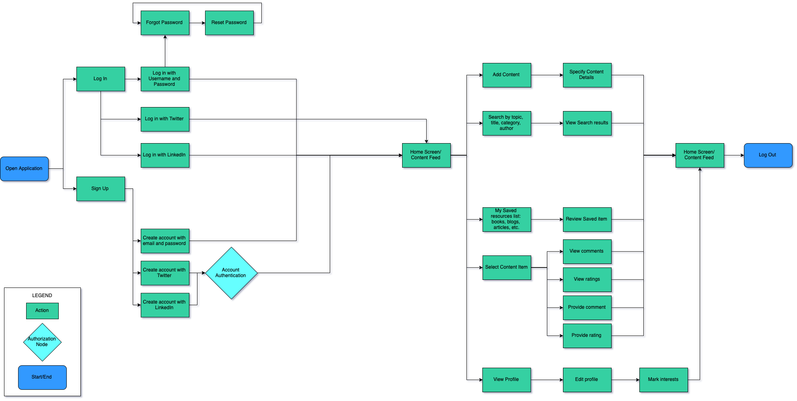Wireframes
Rough paper sketches allowed for experimentation with different layouts while deciding which were the most usable solution best capable to address user needs. The best rough sketches were recreated using Figma.
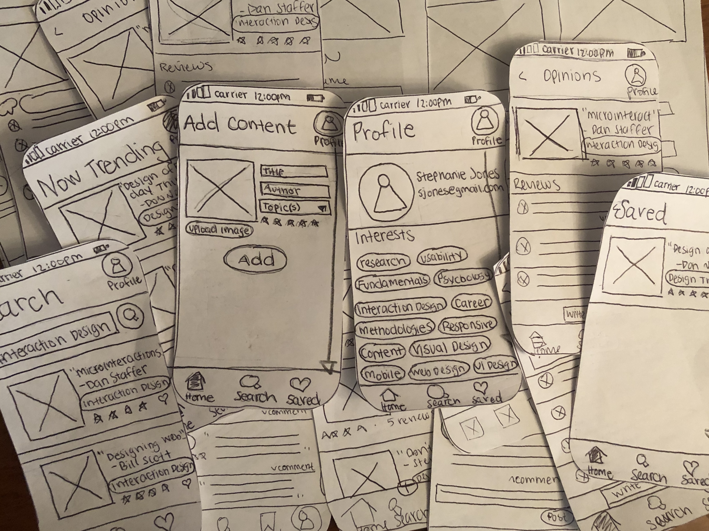Mid-fidelity Prototype
To check that wireframes were functional and to uncover fundamental flaws, the wireframes were turned into mid-fidelity mockups were tested on UX Designers.
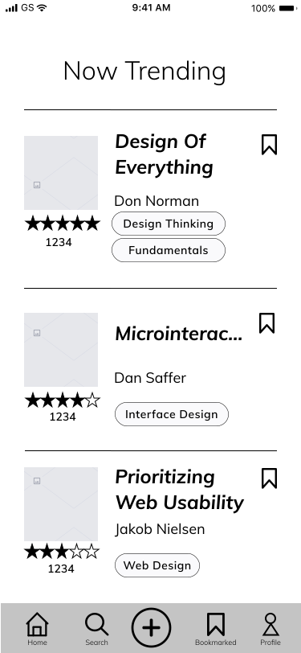Iterations based on testing results
Problem
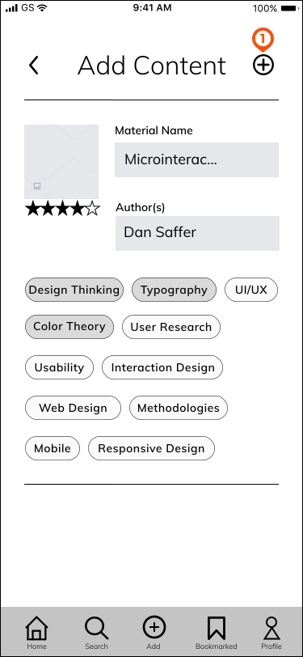Users found that having the add button here was confusing for two reasons. First, it was too similar to the add button on the menu bar. Second, they expected the button to be below the add content section. They didn’t expect to travel back up the screen to find the button.
Solution
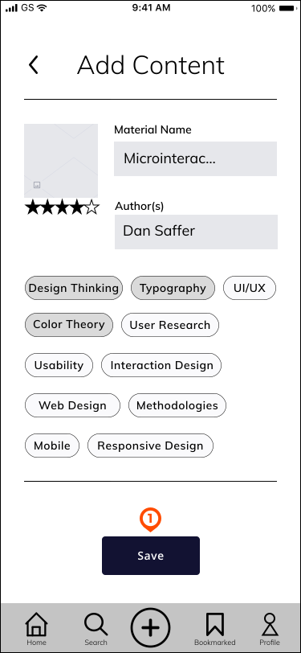The add content icon was changed to a button to give it more distinction. The button was placed towards the bottom ofthe add content screen so they users would not have to navigate backup the screen to save.
Problem
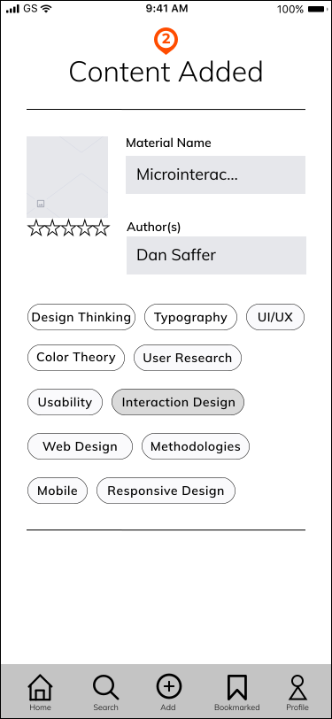Users found that the content added screen was too similarto the former screen. They thought the flow should finishwith a more distinct screen to show that the flow was completed.
Solution
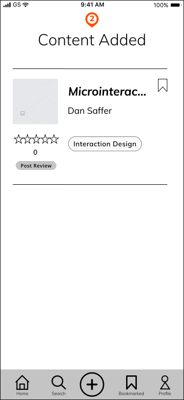The added content now becomes a card when added instead of sharing the same layout with the add content flow. The card now displays on the trending feed instead of having its own page. The card mimics the cards used through out the rest of the application and displays that the content is added.
Problem
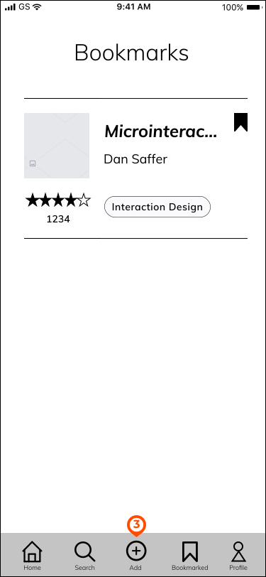Users thought that the add icon was hard to find.
Solution
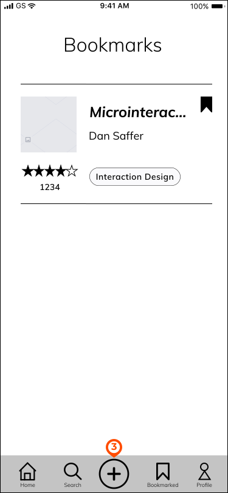Being that add is universal, we removed the label and made the icon larger. Adding content is an important aspect of the application and more hierarchy was needed to establish this to improve usability.
Problem

Users found that the post review button hard to find.
Solution
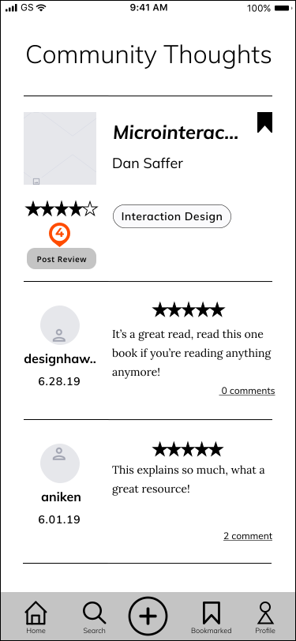The button was increased in size to make it more visible.
Visual Design
Style Tile
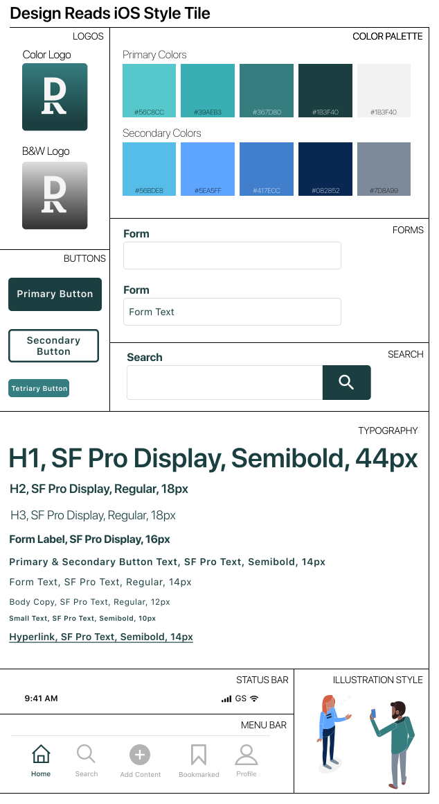Being that DesignReads is an iOS application, we wanted it to be clear, consistent, with subtle aesthetic integrity. The hues of blues and greens are a manifestation of the digital aspect, representing a trustful, modern feel. Graphic illustrations were used to insert personality and create a dynamic user experience.
High Fidelity Mockups
The style tile created the look and feel of the brand and influenced the visual interface. We created two similiar, yet distinct mobile styles: one for iOS and one for Android. The mockups that are shown below are designed for iOS and closely follow the Apple Human Interface Guidelines.
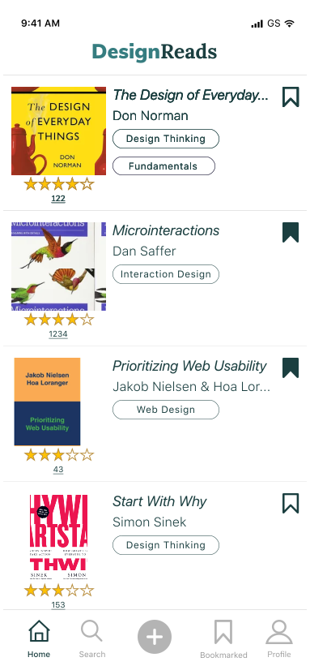
Final Design
Finished Prototype
We did some final testing with fellow UX designers who gave us great feedback. They found that the application was usable, readable, and provided a pleasant experience.
Conclusion
Being that this was my first project working with a group of other designers, I faced many unique challenges. In the past, my design decisions were never challenged by others yet when working with a team of designers, everyone had an opinion. Our biggest challenge was when we were working on the high fidelity mockups. We had varying ideas of how the style should be implemented. We realized that while the styling of the original high fidelity mockups worked for Android, they did not adhere to iOS Standards. Therefore, we decided to create a version for both that could express our individual style preferences. While this solution worked for our passion project, in a professional setting, we would have A/B tested the two prototypes and let data decide which was best.
Also, being that I worked as a project manager for this project, I realized how hard managing a team can be. It is challenging to organize people, keep everyone on a timeline, and work meetings into busy schedules. I found that using a kanban board allowed us to implement a modified sprint method, so we each could select the tasks we had time to complete for a given week. I also found that using a time tracker to record how much time we spent on a single task allowed us to be more productive and held us accountable to our weekly commitments.
Staying organized is a huge aspect of the UX design process and working with a group makes it important. I learned that having each team member document their process, decisions, and findings in a shared space is extremely valuable. Having a shared space to document the project not only helps with writing the case study once the project is complete, but can also save hours that are spent in meetings.